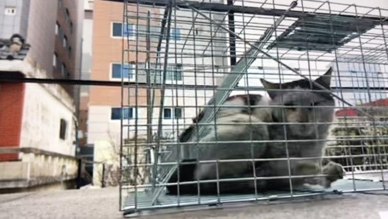
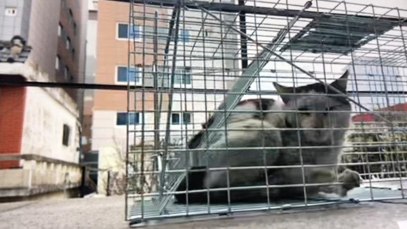

[Activity Report] Skin Necrolysis Stray Cat "Gild" Rescue Activity
Registration Date Author Life Attachment activitydata_02_02{kind=link}
In the feeding station in front of the Life office, there is a mackerel Tabby cat "roady" that sometimes comes to eat.
It looks close in the photo,
As soon as he approached, the runaway man had no hits on the hand of the man, but he seemed to be eating well here and there.
When the road, which had been invisible for a while, reappeared, there was a large scab sitting on his face, and between them seemed to be a real thing.
Later, the area of the wound where the scab fell was drained of the essence, and the flesh was deeply crushed, so that the skin tissue could be seen.
the skin of the elongated fat appeared to be in the process of necrosis,
Life rushed to the rescue.
 

After two rescue attempts
I was able to capture the hungry roadkeepers
Gil, who had been trembling with anxiety the entire time he was taken to the hospital, was stabilized and put into surgery.
The wound on the stray is believed to have been caused by an argument with other cats.
clean up the inflamed ulcer area,
Suturing surgery and TNR were performed together.
After a major surgery, Gilfat looked bewildered,
Contrary to my worries, I ate well, looked at my stools, and showed a full of vitality.
If you see an animal in need in the future, please feel free to contact us.
Life will also work harder for the rights and protection of animals.
Sponsoring the Animal Protection OrganizationLife
of the Satanic Corporation Click on the link below and
you will be taken to a
sponsorship page :)
The behind-the-scenes story
can be found on
YouTube <LifeTV>!
Click on the
link below to < YouTube >LifeTV.
You will be connected:)